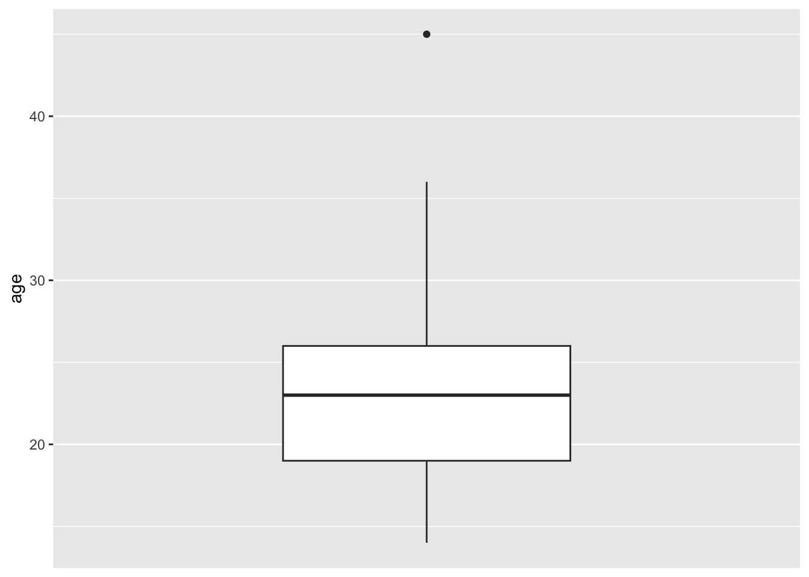
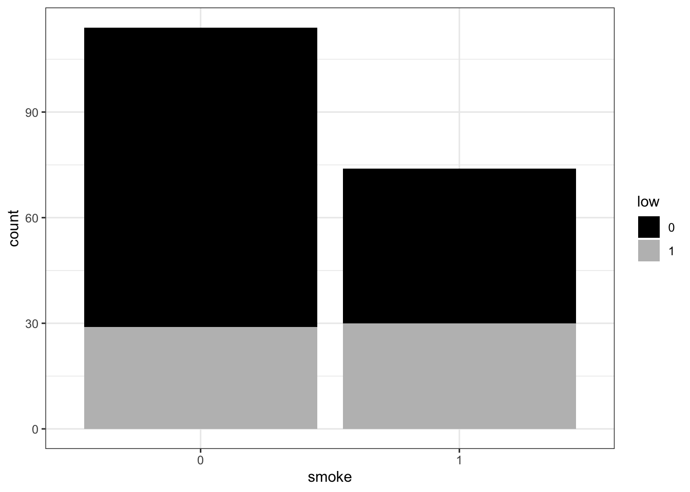
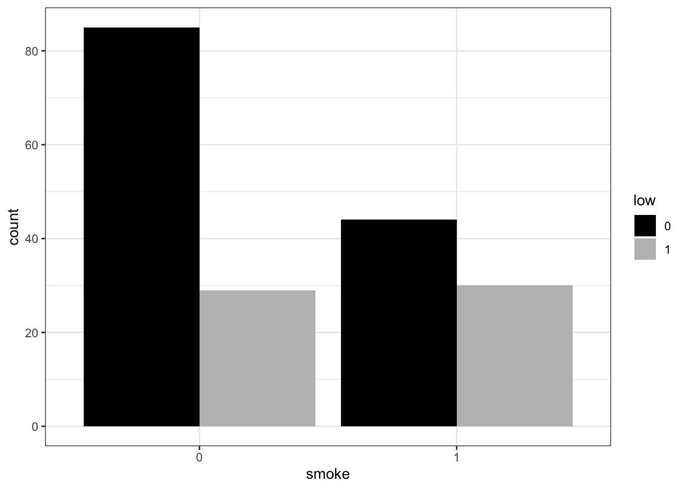
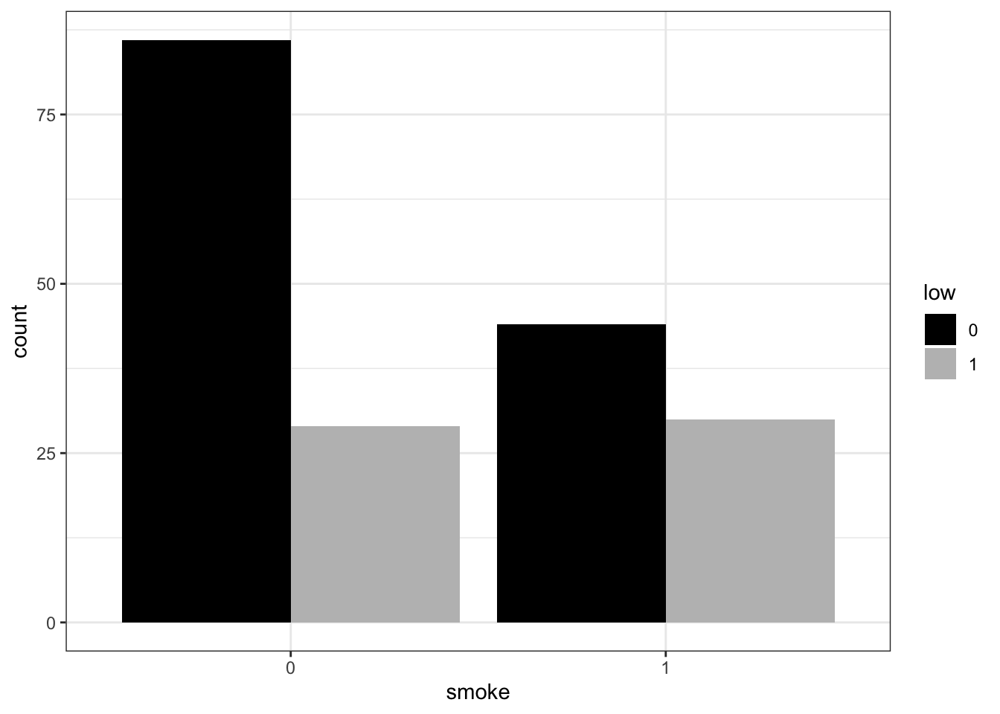
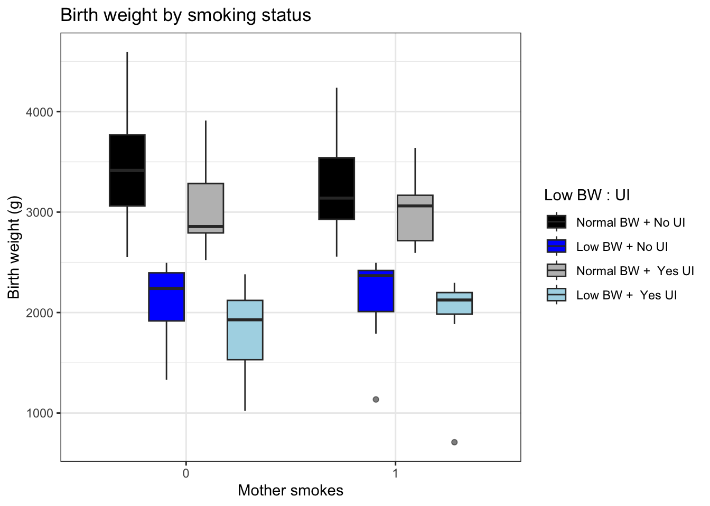
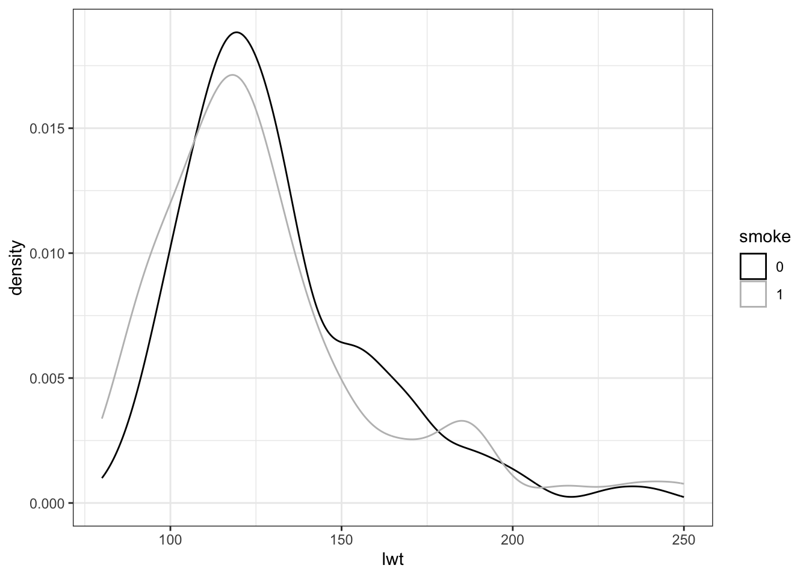
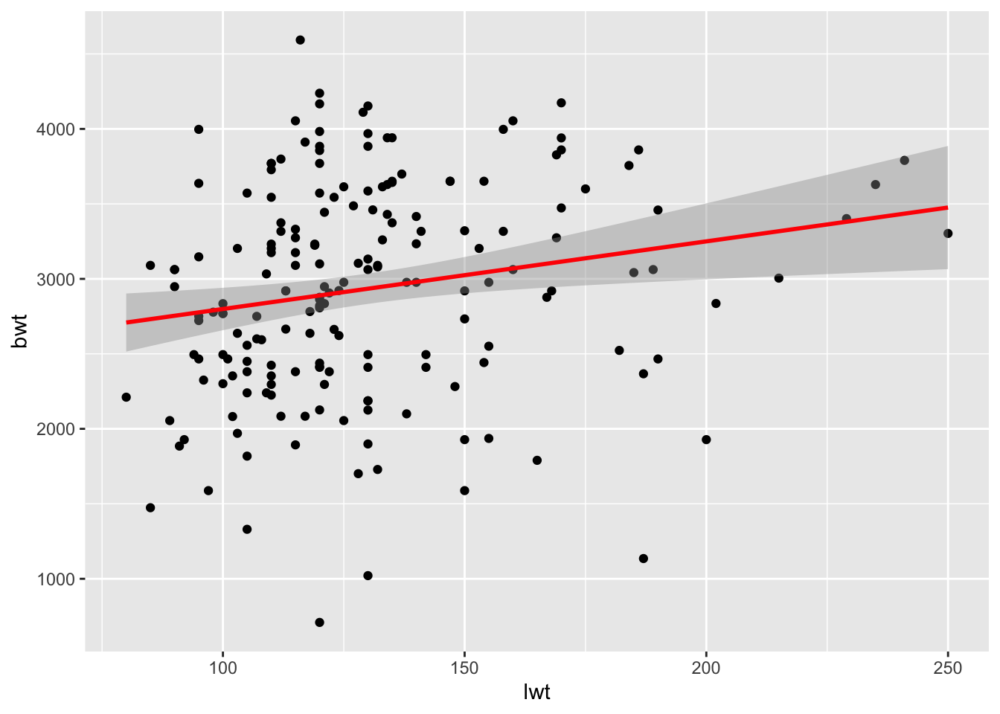
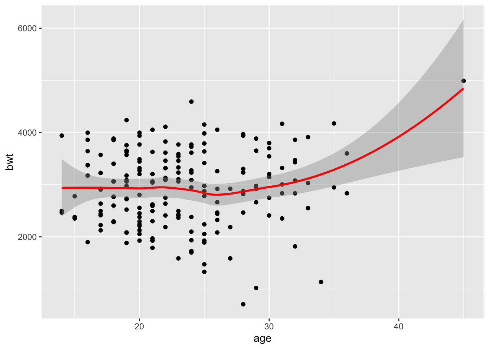

data(birthwt)
?birthwt #display help pageExercise 5: Data Exercise in R
Introduction
In this exercise you will practice your newly acquired R skills on an example dataset.
If you have your own data to work on, you can still follow the steps in the exercise where they apply.
R-packages
For the data wrangling and statistical modelling we will be doing in this exercise, you will need the following R-packages: tidyverse, ggplot2, emmeans, MASS.
- Make sure that these packages are installed and loaded into your R environment. You likely have the packages already installed and loaded (you used these in the previous exercises) try
sessionInfo()andrequire()(look up what these function do). If the packages are not there install them and library them as in the previous exercises.
Getting the Dataset
For this exercise, we’ll use the birthweight dataset from the package MASS. It contains the birthweight of infants and some information about the mother.
To get it we have to load the package and then the data. We will also display the help so we can read some background info about the data and what the columns are:
N.B If it says <Promise> after birthwt in your global environment just click on it and the dataframe will be loaded properly.
If you have a dataset of your own you would like yo look at instead of the example data we provide here, you are very welcome to. You can again use read_excel() for excel sheets. For other formats, have a look at read.csv(), read.table(), read.delim(), etc. You can either google your way to an answer or ask one of the course instructors.
- Now, check the class of the dataset. We’ll be using
tidyverseto do our anaylsis, so if it isn’t already a tibble, make it into one.
Check class of data.
class(birthwt)[1] "data.frame"Convert into tibble.
birthwt <- as.tibble(birthwt)Warning: `as.tibble()` was deprecated in tibble 2.0.0.
ℹ Please use `as_tibble()` instead.
ℹ The signature and semantics have changed, see `?as_tibble`.Check class of data to confirm that it is a tibble.
class(birthwt)[1] "tbl_df" "tbl" "data.frame"Exploratory Analysis
The Basics
Before performing any statistical analysis (modelling), it is necessary to have a good understanding of the data. Start by looking at:
- How many variables and observations are there in the data?
birthwt %>% count()# A tibble: 1 × 1
n
<int>
1 189- What was measured, i.e. what do each of the variables describe? You can rename variables via the
colnames()if you want to.
Run the command below to inspect the data. This can only be done to this dataset because it was loaded from a packages. Hence you will not be able to do this with your own data.
?birthwt- Which data types are the variables and does that make sense? Should you change the type of any variables? Hint: Think about types
factor, numerical, integer, character, etc.
str(birthwt)tibble [189 × 10] (S3: tbl_df/tbl/data.frame)
$ low : int [1:189] 0 0 0 0 0 0 0 0 0 0 ...
$ age : int [1:189] 19 33 20 21 18 21 22 17 29 26 ...
$ lwt : int [1:189] 182 155 105 108 107 124 118 103 123 113 ...
$ race : int [1:189] 2 3 1 1 1 3 1 3 1 1 ...
$ smoke: int [1:189] 0 0 1 1 1 0 0 0 1 1 ...
$ ptl : int [1:189] 0 0 0 0 0 0 0 0 0 0 ...
$ ht : int [1:189] 0 0 0 0 0 0 0 0 0 0 ...
$ ui : int [1:189] 1 0 0 1 1 0 0 0 0 0 ...
$ ftv : int [1:189] 0 3 1 2 0 0 1 1 1 0 ...
$ bwt : int [1:189] 2523 2551 2557 2594 2600 2622 2637 2637 2663 2665 ...Change the appropriate variables to factor.
birthwt <- birthwt %>%
mutate(low = factor(low),
race = factor(race),
smoke = factor(smoke),
ht = factor(ht),
ui = factor(ui)
)What is our response/outcome variable(s)? There can be several.
bwt(birth weight) andlow(the indicator of birth weight less than 2.5 kg).Is the (categorical) outcome variable balanced? No, the categorical outsome variable (
low) is nit very balanced.
birthwt$low %>% table().
0 1
130 59 - Are there any missing values (
NA), if yes and how many? Google how to check this if you don’t know. No, there are noNAvalues in any of the columns.
birthwt %>% is.na() %>% colSums() low age lwt race smoke ptl ht ui ftv bwt
0 0 0 0 0 0 0 0 0 0 Diving into the data
Numeric variables
Some of the measured variables in our data are numeric, i.e. continuous. For these do:
- Calculate summary statistics (mean, median, sd, min, max) Calculate mean, median, minimum and maximum with
summaryfunction.
birthwt %>%
dplyr::select(age, lwt, ptl, ftv, bwt) %>%
summary() age lwt ptl ftv
Min. :14.00 Min. : 80.0 Min. :0.0000 Min. :0.0000
1st Qu.:19.00 1st Qu.:110.0 1st Qu.:0.0000 1st Qu.:0.0000
Median :23.00 Median :121.0 Median :0.0000 Median :0.0000
Mean :23.24 Mean :129.8 Mean :0.1958 Mean :0.7937
3rd Qu.:26.00 3rd Qu.:140.0 3rd Qu.:0.0000 3rd Qu.:1.0000
Max. :45.00 Max. :250.0 Max. :3.0000 Max. :6.0000
bwt
Min. : 709
1st Qu.:2414
Median :2977
Mean :2945
3rd Qu.:3487
Max. :4990 Calculate standard deviation.
birthwt %>%
dplyr::select(age, lwt, ptl, ftv, bwt) %>% # Specify select function from the dplyr package.
summarize(age_sd = sd(age),
lwt_sd = sd(lwt),
ptl_sd = sd(ptl),
ftv_sd = sd(ftv),
bwt_sd = sd(bwt)
)# A tibble: 1 × 5
age_sd lwt_sd ptl_sd ftv_sd bwt_sd
<dbl> <dbl> <dbl> <dbl> <dbl>
1 5.30 30.6 0.493 1.06 729.- Create boxplots for each numeric variable using
ggplot2, and applyscale_x_discrete()to prevent meaningless scaling of the boxplot widths. Do this for all the numeric variables (age,lwt,ptl,ftv,bwt).
ggplot(birthwt,
aes(y = age)) +
geom_boxplot() +
scale_x_discrete()
Do you see outliers in your dataset? Look at the point in the data set.
Now remake the boxplot with two different colors, depending on the (categorical) outcome variable.
ggplot(birthwt,
aes(y = age,
fill = low)) +
geom_boxplot() +
scale_x_discrete() +
scale_fill_manual(values = c('black', 'grey')) +
theme_bw() 
Categorical variables
Other columns describe variables that are categorical. Some of these may have been initially interpreted by R as numerical, especially if they are coded with 0/1.
If you haven’t changed their datatype to factor yet, do so now. You can see how in Presentation 5. We did this in the beginning.
When you are done, make barplots of each categorical variable. Do for each of the categorical variables (
race,smoke,ht,ui)
ggplot(birthwt,
aes(x = smoke)) +
geom_bar()
- Then, split up the barplot for
smokeso you have two different colors for the two different values of the outcome variable (the same way you did it above for the boxplots).
ggplot(birthwt,
aes(x = smoke,
fill = low)) +
geom_bar(position = 'dodge') +
scale_fill_manual(values = c('black', 'grey')) +
theme_bw() 
- Now, add the argument
position ='dodge'to geom_bar and remake the plot. What has changed? Then remake it once again withposition ='fill'. What information do the different barplots show? Compare to the counts you get from thesmokecolumn when you group the dataframe by the outcome variable.
ggplot(birthwt,
aes(x = smoke,
fill = low)) +
geom_bar(position = 'fill') +
scale_fill_manual(values = c('black', 'grey')) +
theme_bw() 
- Lastly, make a density plot of the two continuous variables
lwtandbwt, split it up bysmoke. Just showed forlwthere.
ggplot(birthwt,
aes(x = lwt,
color = smoke)) +
geom_density() +
scale_color_manual(values = c('black', 'grey')) +
theme_bw()
Extra: Pick custom colors for your plots (look into scale_fill_manual()).
Subsetting the data
Based on what you have observed in the last two sections, now choose two numeric variables and two categorical variables to move forward with. Create a subset of the dataframe with only these variables and the categorical and numeric outcome.
birthwt_subset <- birthwt %>% dplyr::select(age, lwt, smoke, ptl, low, bwt)
head(birthwt_subset)# A tibble: 6 × 6
age lwt smoke ptl low bwt
<int> <int> <fct> <int> <fct> <int>
1 19 182 0 0 0 2523
2 33 155 0 0 0 2551
3 20 105 1 0 0 2557
4 21 108 1 0 0 2594
5 18 107 1 0 0 2600
6 21 124 0 0 0 2622Modelling
You now have a prepared dataset on which we can do some modelling.
Regression Model 1
In the Applied statistics session you’ve tried out an analysis with one way ANOVA, where you compared the effect of categorical variables (skin type) on the outcome (gene counts).
We’ll do something similar here but instead we will use the numerical variables as predictors and the measured birthweight as the (numerical) outcome. This is what is known as linear regression.

We can also do this with lm() and follow the same syntax as before:
model1 <- lm(resp ~ pred1, data=name_of_dataset)Simply, if the outcome variable we are interested in is continuous, then lm() will functionally be doing a linear regression. If the outcome is categorical, it will be performing ANOVA (which if you only have two groups is effectively a t-test). Have a look at this video if you want to understand why you can do a t-test / ANOVA with a linear model.
- Now, pick one of your numeric variables and use it to model the (numeric/continuous) outcome.
model1_lwt <- lm(bwt ~ lwt, data = birthwt_subset)- Investigate the model you have made by writing its name, i.e.
model1_lwtWhat does this mean? Compare to the linear model illustration above. At the intercept the
lwt(mother’s weight in pounds) is 0 (very unrealistic) thebwtis 2369.624 grams. For each pound that a mother weighs more, thebtwis 4.429 grams more.We’ll now make a plot of your model to help us better visualize what has happened. Make a scatter plot with your predictor variable on the x-axis and the outcome variable on the y-axis.
ggplot(birthwt_subset,
aes(x = lwt,
y = bwt)) +
geom_point()
- Now add the regression line to the plot by using the code below. For the slope and intercept, enter the values you found when you inspected the model. Does this look like a good fit?
ggplot(birthwt_subset,
aes(x = lwt,
y = bwt)) +
geom_point() +
geom_abline(slope = model1_lwt$coefficients["lwt"],
intercept = model1_lwt$coefficients["(Intercept)"],
color = 'red')- Repeat the process with the other numeric variable you picked.
model1_age <- lm(bwt ~ age, data = birthwt_subset)
model1_age
Call:
lm(formula = bwt ~ age, data = birthwt_subset)
Coefficients:
(Intercept) age
2655.74 12.43 ggplot(birthwt_subset,
aes(x = age,
y = bwt)) +
geom_point() +
geom_abline(slope = model1_age$coefficients["age"],
intercept = model1_age$coefficients["(Intercept)"],
color = 'red')Sometimes the variables we have measured are not good at explaining the outcome and we have to accept that.
- Instead of the
geom_abline(), trygeom_smooth()which provides you with a confidence interval in addition to the regression line. Look at the help for this geom (or google) to figure out what argument it needs to work!
ggplot(birthwt_subset,
aes(x = age,
y = bwt)) +
geom_point() +
geom_smooth(formula = y ~ x,
color = 'red')`geom_smooth()` using method = 'loess'
- Inspect your model in more detail with
summary(). Look at the output, what additional information do you get about the model. Pay attention to theResidual standard error (RSE)andAdjusted R-squared (R2adj)at the bottom of the output. We would likeRSEto be as small as possible (goes towards 0 when model improves) while we would like theR2adjto be large (goes towards 1 when model improves).
summary(model1_lwt)
Call:
lm(formula = bwt ~ lwt, data = birthwt_subset)
Residuals:
Min 1Q Median 3Q Max
-2192.12 -497.97 -3.84 508.32 2075.60
Coefficients:
Estimate Std. Error t value Pr(>|t|)
(Intercept) 2369.624 228.493 10.371 <2e-16 ***
lwt 4.429 1.713 2.585 0.0105 *
---
Signif. codes: 0 '***' 0.001 '**' 0.01 '*' 0.05 '.' 0.1 ' ' 1
Residual standard error: 718.4 on 187 degrees of freedom
Multiple R-squared: 0.0345, Adjusted R-squared: 0.02933
F-statistic: 6.681 on 1 and 187 DF, p-value: 0.0105summary(model1_age)
Call:
lm(formula = bwt ~ age, data = birthwt_subset)
Residuals:
Min 1Q Median 3Q Max
-2294.78 -517.63 10.51 530.80 1774.92
Coefficients:
Estimate Std. Error t value Pr(>|t|)
(Intercept) 2655.74 238.86 11.12 <2e-16 ***
age 12.43 10.02 1.24 0.216
---
Signif. codes: 0 '***' 0.001 '**' 0.01 '*' 0.05 '.' 0.1 ' ' 1
Residual standard error: 728.2 on 187 degrees of freedom
Multiple R-squared: 0.008157, Adjusted R-squared: 0.002853
F-statistic: 1.538 on 1 and 187 DF, p-value: 0.2165N.B if you want to understand the output of a linear regression summary in greater detail have a look here.
summary(model1)Regression Model 2
- Remake your model (call it
model2) but this time add an additional explanatory variable to the model in addition tolwt. This should be one of the categorical variable you selected to be in your subset. (smokemight be interesting, but you could also try eitherageand/orht). Does adding this second exploratory variable improve the metricsRSEand/orR2adj?
model2 <- lm(resp ~ pred1 + pred2, data=name_of_dataset)model2 <- lm(bwt ~ lwt + age, data=birthwt_subset)
model2
Call:
lm(formula = bwt ~ lwt + age, data = birthwt_subset)
Coefficients:
(Intercept) lwt age
2214.412 4.177 8.089 summary(model2)
Call:
lm(formula = bwt ~ lwt + age, data = birthwt_subset)
Residuals:
Min 1Q Median 3Q Max
-2233.11 -499.33 9.44 520.48 1897.84
Coefficients:
Estimate Std. Error t value Pr(>|t|)
(Intercept) 2214.412 299.311 7.398 4.59e-12 ***
lwt 4.177 1.744 2.395 0.0176 *
age 8.089 10.063 0.804 0.4225
---
Signif. codes: 0 '***' 0.001 '**' 0.01 '*' 0.05 '.' 0.1 ' ' 1
Residual standard error: 719.1 on 186 degrees of freedom
Multiple R-squared: 0.03784, Adjusted R-squared: 0.02749
F-statistic: 3.657 on 2 and 186 DF, p-value: 0.02767- Find the 95% confidence intervals for model2, by using the
confint()function. If you are not familiar with confidence intervals, have a look here.
confint(model2) 2.5 % 97.5 %
(Intercept) 1623.9308765 2804.893274
lwt 0.7368935 7.616519
age -11.7624513 27.940789- Try the following commands (or a variation of it, depending on which variables you have included in model2), and see if you can figure out what the outcome means.
newData <- data.frame(lwt=100, age = 50, smoke=as.factor(1))
newData
predict(model2, newData)
predict(model2, newData, interval="prediction")Bonus Exercise - ANOVA
Now, we will instead look at the two categorical variables you picked. Make a model of the outcome variable depending on one the categorical variable
- Pick one of the two categorical variables and use it to model the (numeric) outcome, just as during the Applied Stats session:
model3 <- lm(bwt ~ smoke, data=birthwt_subset)- inspect the output by calling
summary()on the model
summary(model3)You can have a look at this website to help you understand the output of summary.
Short detour: The meaning of the intercept in an ANOVA
The intercept is the estimate of the outcome variable that you would get when all explanatory variables are 0.
So if we have the model lm(bwt ~ smoke, data = birthData) and smoke is coded as 0 for non-smokers and 1 for smokers, the intercept is the estimate birthweight of a baby of a non-smoker. It will be significant because it is significantly different from 0, but that doesn’t mean much since we would usually expect babies to weight more than 0.
You can now make some other models, including several predictors and see what you get.